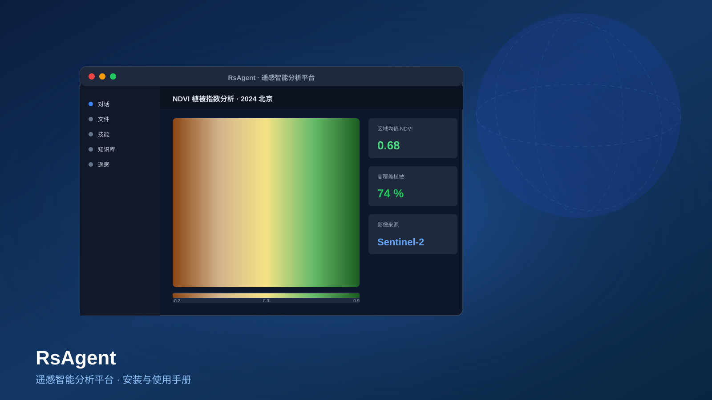
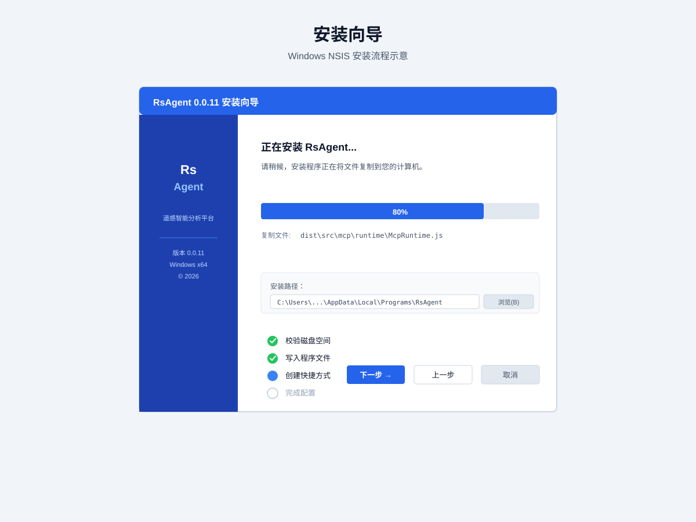
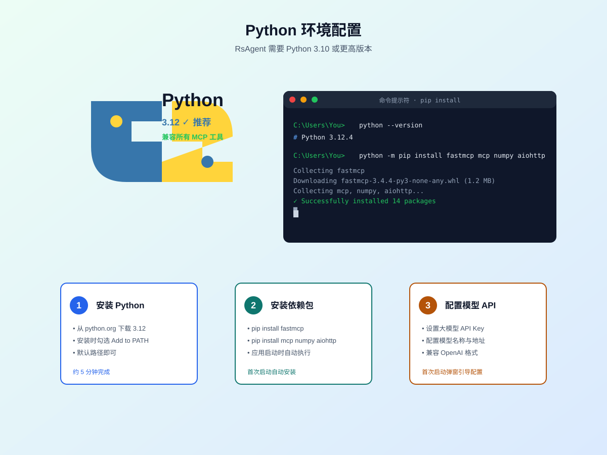
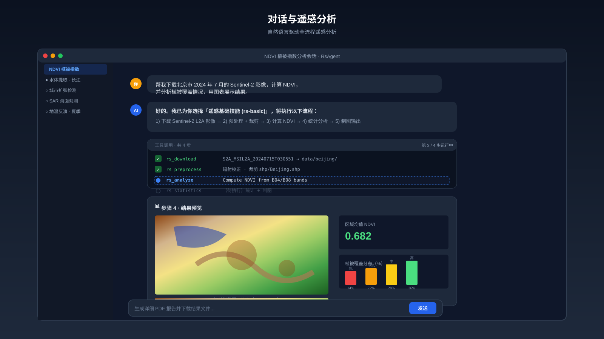

图 1 · RsAgent 产品架构概念

安装与使用手册
v0.0.11 · Windows x64RsAgent 是一款基于 AI Agent 架构的遥感智能分析桌面应用，将大语言模型与遥感专业工具链深度融合，用户可通过自然语言对话完成卫星影像下载、预处理、指数计算、地物分类、变化检测、SAR 分析、深度学习推理、制图出图等全流程任务。
| 能力域 | 说明 |
|---|---|
| 自然语言交互 | 通过对话描述需求，AI 自动编排遥感工具链 |
| 影像获取 | 支持 Sentinel-2、Landsat-8、高分系列等卫星影像下载 |
| 预处理 | 辐射校正、几何校正、裁剪拼接、重采样 |
| 光谱指数 | NDVI、NDWI、EVI、SAVI、MNDWI、NDBI 等 |
| 智能解译 | 阈值分割、水体提取、SAM2 语义分割、场景分类 |
| 深度学习 | YOLOv8 目标检测、U-Net 语义分割、BIT 变化检测 |
| SAR 分析 | 合成孔径雷达数据处理与分析 |
| 统计分析 | 时间序列趋势分析、热点分析、描述性统计 |
| 知识库 | 遥感知识检索、互联网搜索、自主知识积累 |
| 制图出图 | 专题图制作与报告生成 |
| 项目 | 最低要求 | 推荐配置 |
|---|---|---|
| 操作系统 | Windows 10 64-bit | Windows 11 64-bit |
| 处理器 | 双核 x64 | 四核及以上 |
| 内存 | 8 GB | 16 GB 及以上 |
| 硬盘空间 | 2 GB（安装） | 20 GB+（含影像数据） |
| Python | 3.10 | 3.12 |
| 网络 | 首次启动需联网 | 全程联网 |
RsAgent 依赖 fastmcp 和 mcp 包，这两个包要求 Python ≥ 3.10。如果你的电脑安装了 Anaconda3（可能是 Python 3.7），应用会自动搜索系统中其他符合条件的 Python，但建议单独安装 Python 3.12 以获得最佳兼容性。

安装包文件名格式为 RsAgent-0.0.11-win-x64.exe，基于 NSIS 打包，支持自定义安装路径。
C:\Users\<用户名>\AppData\Local\Programs\RsAgent\，可点击 Browse 更改。
| 路径 | 说明 |
|---|---|
%LOCALAPPDATA%\Programs\RsAgent\ | 程序安装目录 |
%APPDATA%\RsAgent\runtime\<version>\ | 运行时资源解压目录（首次启动自动创建） |
%USERPROFILE%\.rsagent\ | 用户配置与数据目录 |
%USERPROFILE%\.rsagent\pilotdeck.yaml | 主配置文件 |
%USERPROFILE%\.rsagent\desktop.server.log | 运行日志（排查问题用） |
%USERPROFILE%\.rsagent\skills\ | 技能目录（自动同步） |
RsAgent 的遥感分析工具和知识库服务依赖 Python 环境。应用启动时会自动检测并配置 Python，但你也可以手动安装以确保环境就绪。

python --version
# 应输出: Python 3.12.xRsAgent 首次启动时会自动检测 Python 并安装以下依赖包：
| 包名 | 用途 |
|---|---|
fastmcp | MCP 服务器框架 |
mcp | MCP 协议客户端 |
numpy | 数值计算 |
aiohttp | 异步 HTTP 服务 |
首次启动时请确保网络畅通，应用会自动执行 pip install 安装上述依赖（约 200-300 MB 下载量）。安装完成后，后续启动不再需要联网。
如果自动安装失败，可以在命令提示符中手动执行：
"C:\Users\<用户名>\AppData\Local\Programs\Python\Python312\python.exe" -m pip install fastmcp mcp numpy aiohttp如果你的系统有多个 Python 版本，可通过环境变量 PILOTDECK_CONDA_PYTHON 指定 RsAgent 使用的 Python：
# 系统环境变量设置
变量名: PILOTDECK_CONDA_PYTHON
变量值: C:\Users\<用户名>\AppData\Local\Programs\Python\Python312\python.exe首次启动 RsAgent 时，应用会经历以下初始化阶段（通常需要 1-3 分钟）：

| 阶段 | 说明 | 耗时 |
|---|---|---|
| 解压运行时资源 | 将 bundle tar 文件解压到 runtime 目录 | 10-30 秒 |
| 检测 Python 环境 | 搜索系统中的 Python 3.10+ 安装 | 1-5 秒 |
| 安装 Python 依赖 | pip install fastmcp mcp numpy aiohttp | 1-3 分钟（首次） |
| 启动本地服务 | 启动 Gateway 和 UI 服务器 | 10-30 秒 |
| 加载 MCP 服务器 | 启动 8 个遥感工具服务 | 5-15 秒 |
| 同步技能目录 | 将产品技能链接到用户目录 | <1 秒 |
首次启动后，如果配置文件不存在，应用会弹出配置引导窗口。你需要填写以下信息：
| 配置项 | 说明 | 示例 |
|---|---|---|
| 模型名称 | LLM 模型标识 | deepseek-chat |
| API 地址 | 模型服务 API URL | https://api.deepseek.com/v1 |
| API Key | 模型服务密钥 | sk-xxxxxxxx |
配置文件保存在 %USERPROFILE%\.rsagent\pilotdeck.yaml，也可以手动编辑：
# pilotdeck.yaml 示例
model: deepseek-chat
apiUrl: https://api.deepseek.com/v1
apiKey: sk-YOUR_API_KEYRsAgent 兼容任何 OpenAI API 格式的模型服务，包括但不限于：DeepSeek、通义千问、智谱 GLM、Moonshot、OpenAI 等。
RsAgent 主界面采用三栏布局：左侧项目管理、中间主工作区、顶部功能页签。

主工作区顶部有 9 个功能页签，点击即可切换：
| 页签 | 图标 | 功能说明 |
|---|---|---|
| 对话 | 🤖 Bot | AI 对话主界面，支持自然语言交互、文件拖拽、工具调用 |
| 文件 | 📁 Folder | 项目文件浏览器，支持代码编辑、文件管理 |
| 技能 | ✨ Sparkles | 查看和管理已加载的遥感技能 |
| 仪表盘 | 📊 BarChart | 项目数据概览与可视化 |
| 记忆 | 🗄️ Database | AI 记忆管理，查看和编辑记忆条目 |
| 工具 | 🔧 Wrench | MCP 工具列表，查看所有可用工具及状态 |
| 知识库 | 📖 BookOpen | 知识库管理，支持检索、创建、编辑知识条目 |
| 遥感 | 🛰️ Satellite | 遥感专项分析界面，提供可视化操作面板 |
| 常驻 | 📡 Radio | 常驻任务监控，查看定时任务和后台运行状态 |
点击侧边栏底部的设置图标，可打开设置面板，包含以下标签页：
对话页签是 RsAgent 的核心交互界面。你可以用自然语言描述遥感分析需求，AI 会自动理解意图并调用相应的工具链完成任务。

/ 可呼出命令菜单，快速执行预设操作用户: 帮我下载北京市 2024 年 7 月的 Sentinel-2 影像，并计算 NDVI。
AI: 好的，我来帮你完成。
1. [调用 rs_download] 下载 Sentinel-2 影像...
2. [调用 rs_preprocess] 执行预处理（辐射校正、裁剪）...
3. [调用 rs_analyze] 计算 NDVI 植被指数...
结果: NDVI 范围 -0.2 ~ 0.87，植被覆盖良好的区域集中在...用户: 对这幅影像提取水体边界，并导出为 Shapefile。
AI: 我来处理。
1. [调用 extract_water_bodies] 基于 NDWI 阈值分割提取水体...
2. [调用 raster_to_vector] 将水体掩膜转为矢量...
结果: 已导出 water_bodies.shp，共识别 23 个水体图斑。用户: 对比 2023 年和 2024 年同区域影像，检测城市扩张变化。
AI: 我来进行变化检测分析。
1. [调用 rs_download] 下载两期影像...
2. [调用 rs_preprocess] 配准和归一化处理...
3. [调用 rs_analyze] 执行变化检测...
结果: 新增建设用地 12.3 平方公里，主要分布在...RsAgent 内置 8 个 MCP（Model Context Protocol）工具服务器，提供 139+ 个专业遥感分析工具。在"工具"页签可查看所有工具的状态和详情。
| 服务器 | 功能域 | 代表性工具 |
|---|---|---|
| rs-agent | 遥感核心 | 影像下载、预处理、指数计算、可视化、报告生成 |
| rs-analysis | 时间序列 | 线性趋势、Mann-Kendall 检验、STL 分解、变点检测 |
| rs-index | 光谱指数 | NDVI/NDWI/EVI/SAVI/MNDWI/NDBI 计算、波段运算 |
| rs-inversion | 物理反演 | 地表温度、土壤水分、植被参数反演 |
| rs-perception | 感知分割 | 阈值分割、水体提取、SAM2 分割、场景分类、变化检测 |
| rs-statistics | 统计分析 | 描述性统计、直方图、相关性、异常值检测 |
| knowledge-base | 知识检索 | 向量检索、知识列表、网页搜索、知识创建 |
| 内置工具 | 通用 | 文件读写、代码执行、Shell 命令、DAG 编排 |
正常启动后，"工具"页签应显示 139 个以上工具。如果只显示约 20 个，说明 Python MCP 服务器未成功启动，请参考常见问题排查。
技能（Skills）是预设的 AI 行为模板，用于在特定任务场景下增强 AI 的专业能力。在"技能"页签可查看已加载的技能。
| 技能名称 | 描述 |
|---|---|
| rs-basic | 遥感基础操作 — 影像下载、预处理、指数计算 |
| rs-sar | SAR 雷达分析 — 合成孔径雷达数据处理 |
| rs-model | 深度学习模型 — YOLOv8/U-Net/BIT 推理 |
| rs-cartography | 遥感制图 — 专题图制作与符号化 |
RsAgent 启动时会自动将产品内置的 4 个技能同步到 %USERPROFILE%\.rsagent\skills\ 目录，无需手动配置。AI 会根据对话内容自动选择合适的技能。
RsAgent 内置知识库系统，支持遥感专业知识的检索、学习和积累。知识库服务运行在本地 Python 端口 8765。

| 功能 | 说明 |
|---|---|
| 向量检索 | 基于语义相似度搜索知识条目（推荐） |
| 关键词检索 | 基于关键词匹配搜索 |
| 混合检索 | 结合向量和关键词，效果最佳 |
| 网页搜索 | 搜索互联网获取最新资料 |
| 知识创建 | 将学习到的内容存入知识库 |
| 知识更新 | 编辑和更新已有知识条目 |
| 类型 | 说明 |
|---|---|
| geoknowledge | 地理知识 |
| tool_doc | 工具文档 |
| best_practice | 最佳实践 |
| workflow | 工作流程 |
| faq | 常见问题 |
| custom | 自定义 |
web_search 搜索互联网，并用 knowledge_create 将有价值的内容存入知识库排查步骤：
%USERPROFILE%\.rsagent\desktop.server.logpython --version）python -m pip install fastmcp mcp numpy aiohttp如果日志中出现 Gateway failed to start on port 18789 within 45000ms，可能是 Python 依赖安装阻塞了启动流程。请手动安装依赖后重启：
"C:\Users\<用户名>\AppData\Local\Programs\Python\Python312\python.exe" -m pip install fastmcp mcp numpy aiohttp原因：Python MCP 服务器未能成功启动，通常是 fastmcp 或 mcp 包未安装。
解决：
python -c "import fastmcp; import mcp; import numpy"ModuleNotFoundError，手动安装：python -m pip install fastmcp mcp numpy原因：知识库 Python 服务未启动，通常是 aiohttp 或 numpy 未安装。
解决：
python -m pip install aiohttp numpy排查：检查 %USERPROFILE%\.rsagent\skills\ 目录是否存在以下子目录：
rs-basic/
rs-sar/
rs-model/
rs-cartography/如果目录为空，请重启 RsAgent（技能同步在启动时自动执行）。如果仍为空，请检查 %APPDATA%\RsAgent\runtime\<version>\products\ 目录是否存在。
如果需要重新配置 AI 模型，可以删除配置文件后重启应用：
del "%USERPROFILE%\.rsagent\pilotdeck.yaml"重启 RsAgent 后会弹出配置引导窗口。
如果遇到无法解决的问题，可以清除运行时数据后重新启动：
# 关闭 RsAgent 后执行
rmdir /s /q "%APPDATA%\RsAgent\runtime"
del "%USERPROFILE%\.rsagent\desktop.server.pid"
# 重新启动 RsAgent清除 runtime 目录后，首次启动会重新解压资源并安装依赖，需要联网并等待 2-5 分钟。你的配置文件和对话数据不会被删除。
# %USERPROFILE%\.rsagent\pilotdeck.yaml
# AI 模型配置
model: deepseek-chat # 模型名称
apiUrl: https://api.deepseek.com/v1 # API 地址
apiKey: sk-xxxxxxxx # API 密钥
# 可选：指定 Python 路径
# pythonPath: C:\Python312\python.exe| 变量名 | 说明 | 默认值 |
|---|---|---|
PILOTDECK_CONDA_PYTHON | 指定 Python 解释器路径 | 自动检测 |
PILOTDECK_MAX_OUTPUT_TOKENS | 模型最大输出 token 数 | 16000 |
PILOTDECK_MCP_TOOL_TIMEOUT_MS | MCP 工具调用超时（毫秒） | 60000 |
| 端口 | 用途 |
|---|---|
| 18789 | Gateway 服务 |
| 18790-18799 | UI 服务器（自动选择） |
| 18080 | 代理服务 |
| 8765 | 知识库 Python 服务 |
| 8000 | Hook HTTP 服务 |
%USERPROFILE%\.rsagent\desktop.server.log # 主服务日志
%USERPROFILE%\.rsagent\desktop.server.pid # 进程 PID 文件rmdir /s /q "%APPDATA%\RsAgent"
rmdir /s /q "%USERPROFILE%\.rsagent"